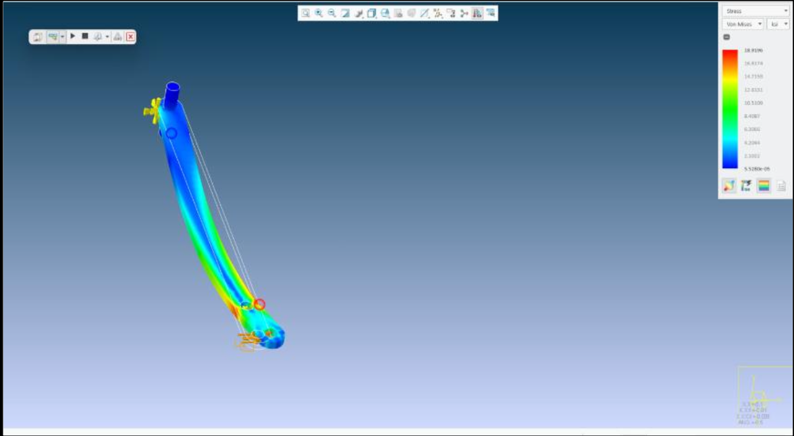
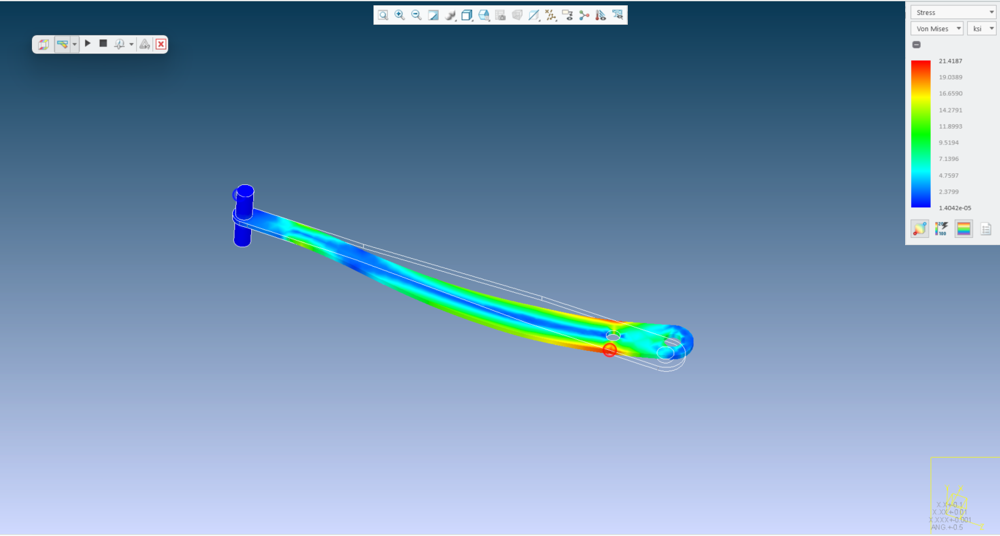

01
New York Air Brake (Knorr-Bremse)
Mechanical Engineering Testing Intern · Watertown, NY · Summer 202661.35 mph
AT 130 PSI — TARGET WAS 60
-37%
LEVER MASS, 30.9→19.3 LB
$1,204
OF $1–2K BUDGET
Trade study ruled out faster valves and bigger hoses — redesigned the arm instead, cross-checked at 60.2 mph on independent high-speed video.

Old arm — 18.9 ksi, FS 1.90
New arm — 21.4 ksi, FS 1.68How It Came Together
01
THE ASK
40 → 60 mph
A customer raised the qualification speed past what the rack could hit.
02
TRADE STUDY
4 options → 1
Rejected faster valves, bigger hoses, and a full rebuild. Chose a new lever and mount.
03
DESIGN
Ratio 4.0 → 7.0
vstrike = vrod × Llong/Lshort. Needed 6.0, designed to 7.0 for margin.
04
TEST + DEBUG
2 bugs killed
Arm sagging into its sensors, and a DAQ capping every run at 58.63 mph.
05
RESULT
61.35 mph
Repeatable at 130 psi, cross-checked at 60.2 mph on high-speed video.
Old Arm vs. New Arm
METRICOLDNEWCHANGE
Lever ratio4.0→7.0+75%
Short / long arm6 / 24 in→5 / 35 in+10 in
Mass30.9 lb→19.34 lb−37%
Inertia at pivot1.00×→1.44×not 3.06×
Peak stress18.9 ksi→21.4 ksi+13%
Factor of safety1.90→1.68A36 steel
What Broke
PROBLEM 01
Arm sagged into its own sensors mid-swing
Fixed with an arc support and pivot shims. Cost speed — the trade-off I took for repeatability.
PROBLEM 02
DAQ quantized speed into fixed steps
Capped every run at 58.63 mph regardless of pressure. Fixed with faster sensors and a shorter timing gate.
Hose Flex Test Rack & Test Floor
HOSE FLEX RACK
Replicated ×2 for international test sites
Sourced components, redesigned fixtures, and released the drawings — $20K+ per unit in parts, so every global site runs the same method.
TEST FLOOR
Set up and ran validation hardware daily
Vibration tables, Thermotron hot/cold chambers, and pneumatic fixtures — configured, instrumented, and verified to spec before every run.
What I'd Do Differently
LESSON 01
Measuring is its own problem
Destroyed sensors and 25+ no-read runs cost more time than the redesign itself.
LESSON 02
FEA is an estimate
The model never simulated shock loading — 70+ live impacts were the real proof.
LESSON 03
One change ripples
A new arm meant a new mount, holes, arc support, shims, and sensors. Pad the schedule.